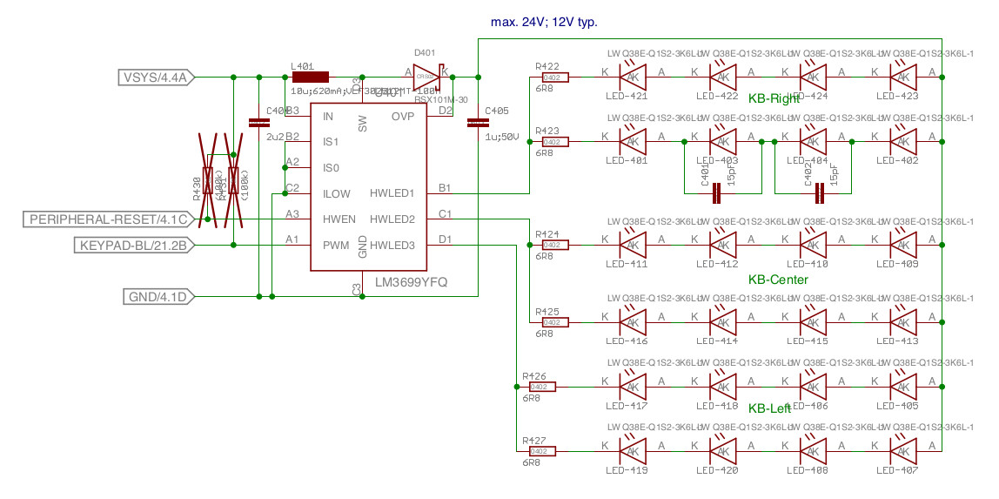
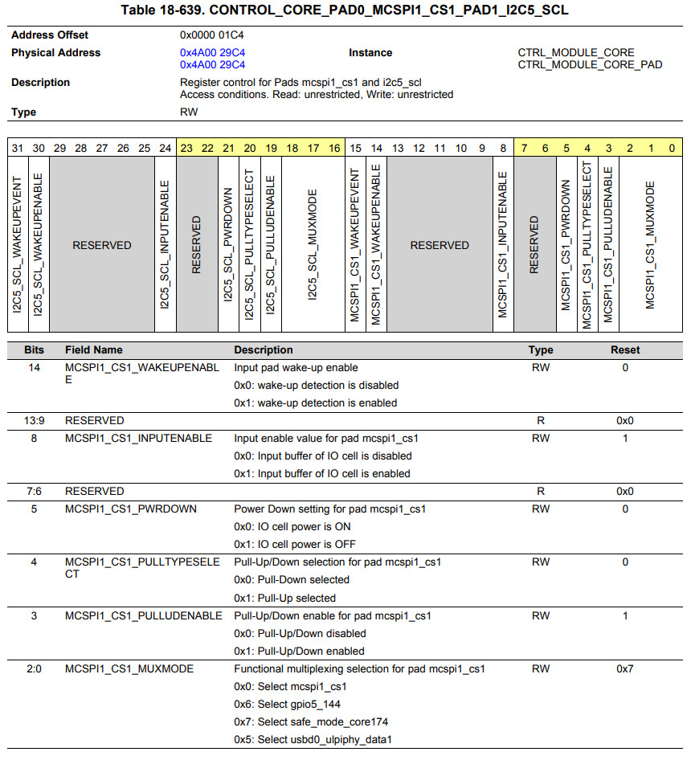
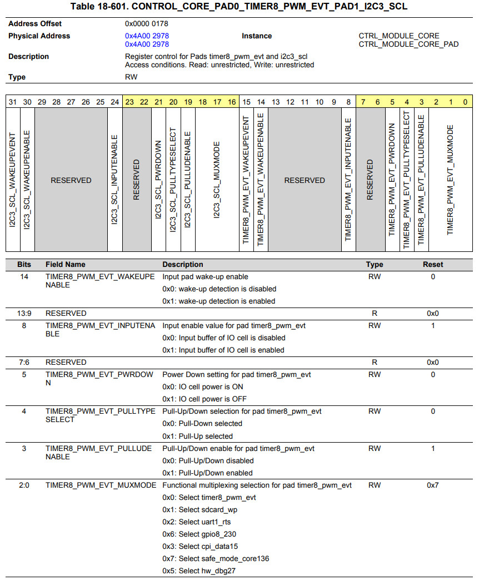
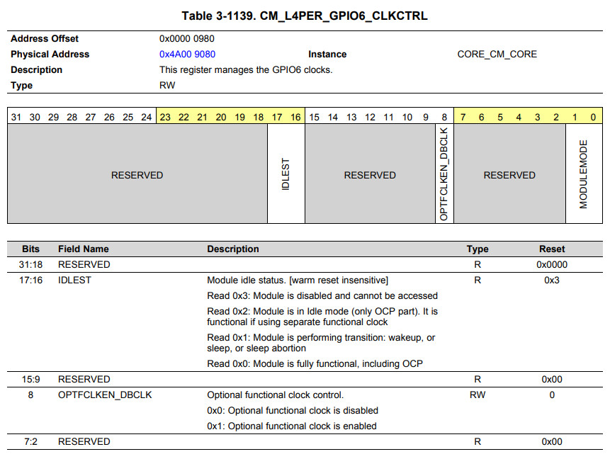
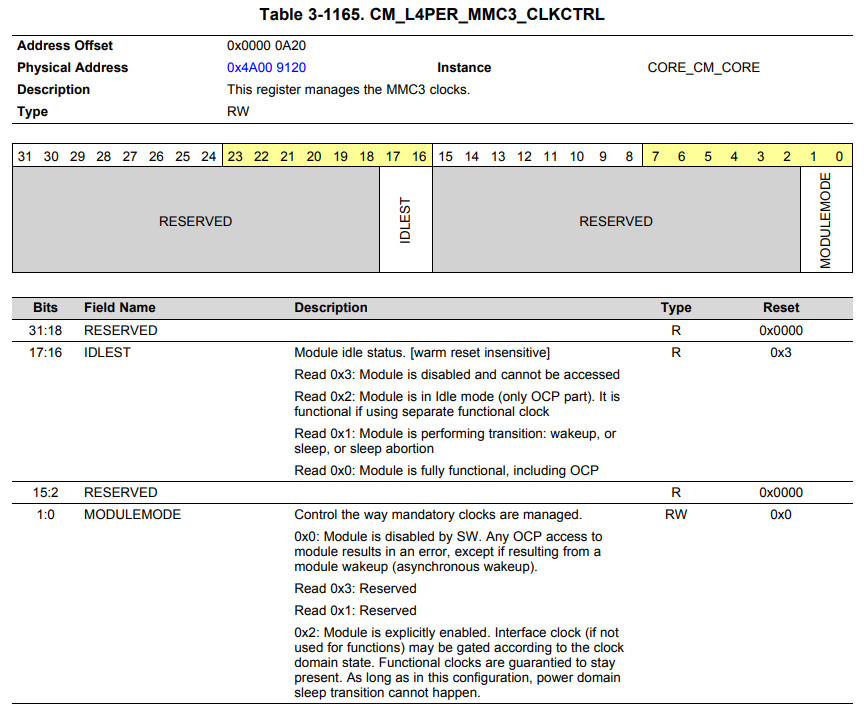
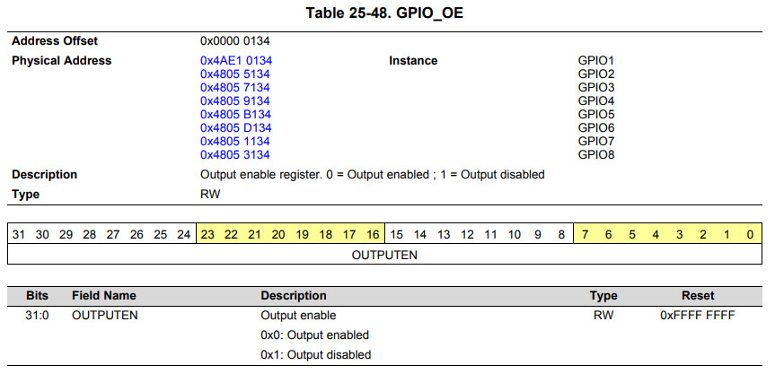
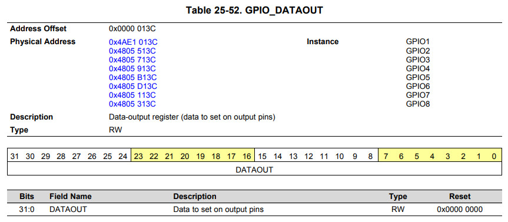
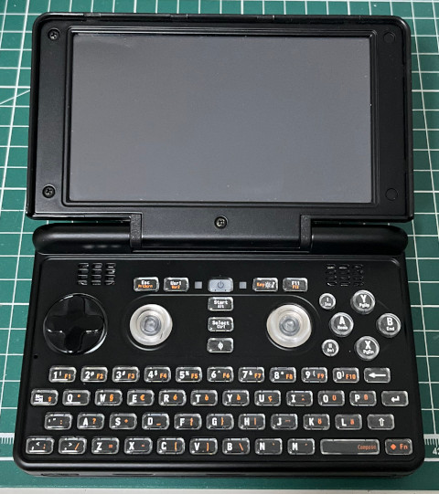
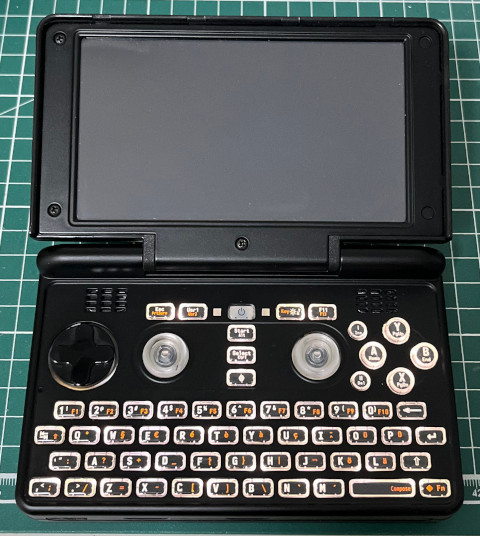

Steward
分享是一種喜悅、更是一種幸福
掌機 - Pyra - Assembly - Keyboard Backlight
參考資訊：
https://pyra-handheld.com/wiki/index.php?title=Main_Page
鍵盤背光電路如下，PERIPHERAL-RESET是連接到MCSPI1_CS1(GPIO5_144)，KEYPAD-BL是連接到PWM(GPIO8_230)

MCSPI1_CS1_MUXMODE = 6 (GPIO5_144)

TIMER8_PWM_EVT_MUXMODE = 6 (GPIO8_230)

GPIO5 Clock

GPIO8 Clock

GPIO_OE

GPIO_DATAOUT

main.s
.global _start
.equ CM_L4PER_GPIO5_CLKCTRL, 0x4a009078
.equ CM_L4PER_GPIO8_CLKCTRL, 0x4a009118
.equ CONTROL_CORE_PAD0_MCSPI1_CS1_PAD1_I2C5_SCL, 0x4a0029c4
.equ CONTROL_CORE_PAD0_TIMER8_PWM_EVT_PAD1_I2C3_SCL, 0x4a002978
.equ GPIO5_OE, 0x4805b134
.equ GPIO8_OE, 0x48053134
.equ GPIO5_DATAOUT, 0x4805b13c
.equ GPIO8_DATAOUT, 0x4805313c
.arm
.text
_start:
b reset
b .
b .
b .
b .
b .
b .
b .
reset:
ldr r0, =CM_L4PER_GPIO5_CLKCTRL
ldr r1, =(1 << 0)
str r1, [r0]
ldr r0, =CONTROL_CORE_PAD0_MCSPI1_CS1_PAD1_I2C5_SCL
ldr r1, =6
str r1, [r0]
ldr r0, =CM_L4PER_GPIO8_CLKCTRL
ldr r1, =(1 << 0)
str r1, [r0]
ldr r0, =CONTROL_CORE_PAD0_TIMER8_PWM_EVT_PAD1_I2C3_SCL
ldr r1, =6
str r1, [r0]
ldr r0, =GPIO5_OE
ldr r1, =0
str r1, [r0]
ldr r0, =GPIO5_DATAOUT
ldr r1, =0xffffffff
str r1, [r0]
ldr r0, =GPIO8_OE
ldr r1, =0
str r1, [r0]
ldr r0, =GPIO8_DATAOUT
ldr r1, =0xffffffff
ldr r2, =0x00000000
0:
eor r2, r1
str r2, [r0]
ldr r3, =50000000
1:
subs r3, #1
bne 1b
b 0b
.end
main.ld
MEMORY
{
RAM : ORIGIN = 0, LENGTH = 32M
}
SECTIONS
{
.text : { *(.text*) } > RAM
.data : { *(.data*) } > RAM
}
Makefile
SD=/dev/sdX
all:
arm-linux-gnueabihf-as -mcpu=cortex-a7 -o main.o main.s
arm-linux-gnueabihf-ld -T main.ld -o main.elf main.o
arm-linux-gnueabihf-objcopy -O binary main.elf main.bin
sd:
sudo dd if=/dev/zero of=${SD} bs=1M count=10
sudo dd if=MLO of=${SD} count=2 seek=1 bs=128k
sudo dd if=main.bin of=${SD} count=4 seek=1 bs=384k
clean:
rm -rf main.bin main.o main.elf
P.S. /dev/sdX是SD位置
編譯並且燒錄到SD
$ wget https://github.com/steward-fu/archives/releases/download/pyra/MLO
$ make
arm-linux-gnueabihf-as -mcpu=cortex-a7 -o main.o main.s
arm-linux-gnueabihf-ld -T main.ld -o main.elf main.o
arm-linux-gnueabihf-objcopy -O binary main.elf main.bin
$ make sd
sudo dd if=/dev/zero of=/dev/sdb bs=1M count=10
10+0 records in
10+0 records out
10485760 bytes (10 MB, 10 MiB) copied, 2.61366 s, 4.0 MB/s
sudo dd if=MLO of=/dev/sdb count=2 seek=1 bs=128k
0+1 records in
0+1 records out
66172 bytes (66 kB, 65 KiB) copied, 0.00214024 s, 30.9 MB/s
sudo dd if=main.bin of=/dev/sdb count=4 seek=1 bs=384k
0+1 records in
0+1 records out
188 bytes copied, 0.00200567 s, 93.7 kB/s
P.S. MLO是OMAP的X-Loader，司徒是直接從U-Boot編譯後，拿來使用的
將SD插入到Pyra左邊的卡槽，開機後，鍵盤背光就會開始閃爍

